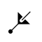

The symbol above shows a threefold axis perpendicular to the plane of the
screen, i.e. parallel to Z.
A threefold axis is equivalent to an anticlockwise rotation of 120°
about a line.
A threefold rotation about the c-axis, i.e. about
the line 0,0,z, will have
the corresponding symmetry operator -y,x-y,z.
This axis has the written symbol "3".

In space group diagrams for cubic symmetry, all the threefold axes are inclined
at an angle of 54.736° to the XY plane. The symbol for these is
shown above, the dot indicating the exact position of intersection with
the plane.